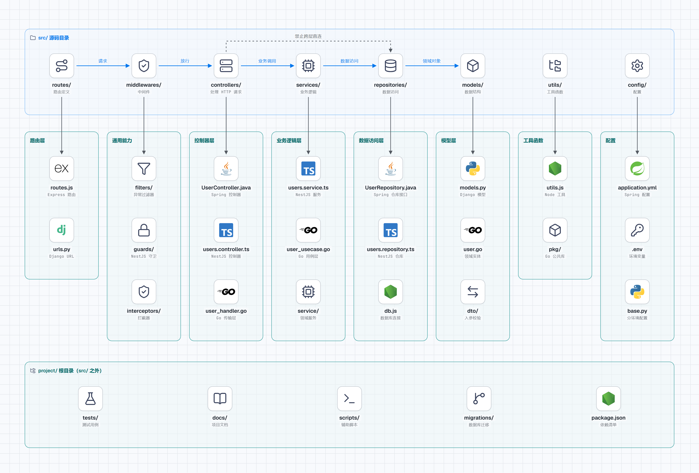

后端项目文件目录设计
本章目录 · 1 节
后端项目架构导论
核心问题 从简单的脚本到大型分布式系统，如何为不同规模、不同语言的后端项目选择合适的架构？ 这就像问：从家庭作坊到大型工厂，如何根据产量和工艺设计不同的生产线？好的后端架构应该随业务成长而演进，同时充分发挥语言特性。
1. 架构演进：从脚本到系统
1.1 按用户量划分架构级别
后端项目的架构应该与业务规模和用户量相匹配：
| 级别 | 用户量 | 并发量 | 典型场景 | 核心关注点 |
|---|---|---|---|---|
| 入门级 | < 1k | < 100 | 个人项目、MVP、内部工具 | 快速开发、简单部署 |
| 进阶级 | 1k-100k | 100-10k | 企业系统、SaaS、中小平台 | 分层架构、代码规范 |
| 企业级 | > 100k | > 10k | 大型平台、互联网应用 | 微服务、高可用、性能优化 |
1.2 按语言特性选择架构风格
不同编程语言有不同的设计哲学和生态，架构设计应该顺应语言特性：
| 语言 | 设计哲学 | 推荐架构风格 | 代表框架 |
|---|---|---|---|
| Node.js | 事件驱动、非阻塞 I/O | 分层架构 + 异步流程 | Express、NestJS、Fastify |
| Python | 简洁优雅、快速开发 | MTV/MVC、分层架构 | Django、Flask、FastAPI |
| Go | 简单高效、并发原生 | 简洁分层、微服务 | Gin、Echo、Fiber |
| Java | 企业级、强类型 | 严格分层、领域驱动 | Spring Boot、Spring Cloud |
架构选择原则
- 不要过度设计：小项目用简单架构，大项目才需要复杂架构
- 顺应语言特性：不要试图在 Python 里写 Java 风格的代码
- 渐进式演进：从简单开始，随业务增长逐步优化
- 团队熟悉度：选择团队熟悉的架构风格，降低学习成本
2. 入门级架构（用户量 < 1k）
2.1 适用场景
- 个人项目、学习练习
- 创业公司 MVP（最小可行产品）
- 内部工具、管理后台
- 原型验证、概念演示
2.2 Node.js - 简洁脚本风格
特点：单文件或简单拆分，快速上线
my-node-api/
├── src/
│ ├── app.js # 应用入口
│ ├── routes.js # 路由定义
│ ├── db.js # 数据库连接
│ └── utils.js # 工具函数
├── .env # 环境变量
├── package.json
└── README.md
代码示例：
// src/app.js
const express = require('express');
const app = express();
app.use(express.json());
// 路由直接写在入口（适合接口很少的情况）
app.get('/users', async (req, res) => {
const users = await db.query('SELECT * FROM users');
res.json(users);
});
app.post('/users', async (req, res) => {
const { name, email } = req.body;
const result = await db.query(
'INSERT INTO users (name, email) VALUES (?, ?)',
[name, email]
);
res.status(201).json({ id: result.insertId });
});
app.listen(3000, () => {
console.log('Server running on port 3000');
});
参考开源项目：
- expressjs/express - 官方示例
- vercel/micro - 微服务风格
2.3 Python - 快速原型风格
特点：利用 Python 的简洁性，快速实现功能
my-python-api/
├── app.py # 主应用
├── models.py # 数据模型
├── config.py # 配置
├── requirements.txt
└── README.md
代码示例（Flask）：
# app.py
from flask import Flask, request, jsonify
from flask_sqlalchemy import SQLAlchemy
app = Flask(__name__)
app.config['SQLALCHEMY_DATABASE_URI'] = 'sqlite:///app.db'
db = SQLAlchemy(app)
# 模型定义
class User(db.Model):
id = db.Column(db.Integer, primary_key=True)
name = db.Column(db.String(80), nullable=False)
email = db.Column(db.String(120), unique=True, nullable=False)
# 路由
@app.route('/users', methods=['GET'])
def get_users():
users = User.query.all()
return jsonify([{'id': u.id, 'name': u.name, 'email': u.email} for u in users])
@app.route('/users', methods=['POST'])
def create_user():
data = request.json
user = User(name=data['name'], email=data['email'])
db.session.add(user)
db.session.commit()
return jsonify({'id': user.id}), 201
if __name__ == '__main__':
app.run(debug=True)
参考开源项目：
- pallets/flask - 官方示例
- tiangolo/fastapi - 现代异步风格
2.4 Go - 简洁标准库风格
特点：利用 Go 的标准库，最少的依赖
my-go-api/
├── main.go # 入口
├── handlers.go # 处理器
├── models.go # 模型
├── db.go # 数据库
├── go.mod
└── README.md
代码示例：
// main.go
package main
import (
"database/sql"
"encoding/json"
"log"
"net/http"
_ "github.com/mattn/go-sqlite3"
)
type User struct {
ID int `json:"id"`
Name string `json:"name"`
Email string `json:"email"`
}
var db *sql.DB
func main() {
var err error
db, err = sql.Open("sqlite3", "./app.db")
if err != nil {
log.Fatal(err)
}
http.HandleFunc("/users", usersHandler)
log.Println("Server starting on :8080")
log.Fatal(http.ListenAndServe(":8080", nil))
}
func usersHandler(w http.ResponseWriter, r *http.Request) {
switch r.Method {
case http.MethodGet:
getUsers(w, r)
case http.MethodPost:
createUser(w, r)
}
}
func getUsers(w http.ResponseWriter, r *http.Request) {
rows, _ := db.Query("SELECT id, name, email FROM users")
defer rows.Close()
var users []User
for rows.Next() {
var u User
rows.Scan(&u.ID, &u.Name, &u.Email)
users = append(users, u)
}
json.NewEncoder(w).Encode(users)
}
参考开源项目：
- golang/go - 标准库示例
- go-chi/chi - 轻量级路由
2.5 Java - Spring Boot 起步风格
特点：利用 Spring Boot 的自动配置，快速启动
my-spring-app/
├── src/main/java/com/example/
│ ├── controller/
│ │ └── UserController.java
│ ├── model/
│ │ └── User.java
│ ├── repository/
│ │ └── UserRepository.java
│ └── Application.java
├── src/main/resources/
│ └── application.yml
├── pom.xml
└── README.md
代码示例：
// Application.java
@SpringBootApplication
public class Application {
public static void main(String[] args) {
SpringApplication.run(Application.class, args);
}
}
// User.java
@Entity
public class User {
@Id
@GeneratedValue(strategy = GenerationType.IDENTITY)
private Long id;
private String name;
private String email;
// getters and setters
}
// UserRepository.java
public interface UserRepository extends JpaRepository<User, Long> {
}
// UserController.java
@RestController
@RequestMapping("/users")
public class UserController {
@Autowired
private UserRepository userRepository;
@GetMapping
public List<User> getAllUsers() {
return userRepository.findAll();
}
@PostMapping
public User createUser(@RequestBody User user) {
return userRepository.save(user);
}
}
参考开源项目：
- spring-projects/spring-boot - 官方示例
- spring-projects/spring-petclinic - 经典示例
3. 进阶级架构（用户量 1k-100k）
3.1 适用场景
- 企业管理系统（ERP、CRM、OA）
- SaaS 应用
- 电商平台
- 需要多团队协作的项目
3.2 分层架构详解
进阶级项目推荐采用四层架构（Controller-Service-Repository-Model）：
project/
├── src/
│ ├── controllers/ # 控制层：处理 HTTP 请求
│ ├── services/ # 服务层：业务逻辑
│ ├── repositories/ # 数据层：数据访问
│ ├── models/ # 模型层：数据结构
│ ├── middlewares/ # 中间件
│ ├── utils/ # 工具函数
│ ├── config/ # 配置
│ └── routes/ # 路由定义
├── tests/
├── docs/
└── scripts/

src/ 下八个目录就是这条调用链：路由收请求、中间件放行、控制器喊 service、service 找仓储、仓储按模型取数。虚线标的是禁止项——控制器跳过 service 直连仓储，分层就白分了。3.3 Node.js - 企业级分层
参考开源项目：
- nestjs/nest - 企业级 Node.js 框架
- goldbergyoni/nodebestpractices - Node.js 最佳实践
node-enterprise/
├── src/
│ ├── modules/ # 按功能模块组织
│ │ ├── users/
│ │ │ ├── users.controller.ts
│ │ │ ├── users.service.ts
│ │ │ ├── users.repository.ts
│ │ │ ├── users.module.ts
│ │ │ └── dto/
│ │ ├── orders/
│ │ └── products/
│ ├── common/ # 共享模块
│ │ ├── filters/ # 异常过滤器
│ │ ├── guards/ # 守卫
│ │ ├── interceptors/ # 拦截器
│ │ └── pipes/ # 管道
│ ├── config/
│ └── main.ts
NestJS 代码示例：
// users/users.controller.ts
@Controller('users')
export class UsersController {
constructor(private readonly usersService: UsersService) {}
@Get()
findAll(@Query() query: QueryUserDto) {
return this.usersService.findAll(query);
}
@Post()
create(@Body() createUserDto: CreateUserDto) {
return this.usersService.create(createUserDto);
}
}
// users/users.service.ts
@Injectable()
export class UsersService {
constructor(
@InjectRepository(User)
private usersRepository: Repository<User>,
) {}
async findAll(query: QueryUserDto) {
const [data, total] = await this.usersRepository.findAndCount({
skip: (query.page - 1) * query.limit,
take: query.limit,
});
return { data, total };
}
async create(createUserDto: CreateUserDto) {
const user = this.usersRepository.create(createUserDto);
return this.usersRepository.save(user);
}
}
3.4 Python - Django/DRF 风格
参考开源项目：
- django/django - 官方项目
- encode/django-rest-framework - REST 框架
- cookiecutter/cookiecutter-django - 项目模板
django-enterprise/
├── apps/
│ ├── users/ # 用户应用
│ │ ├── models.py
│ │ ├── views.py # API 视图
│ │ ├── serializers.py # 序列化器
│ │ ├── permissions.py # 权限
│ │ ├── urls.py
│ │ └── tests/
│ ├── orders/
│ └── products/
├── config/ # 项目配置
│ ├── settings/
│ │ ├── base.py
│ │ ├── development.py
│ │ └── production.py
│ ├── urls.py
│ └── wsgi.py
├── utils/ # 共享工具
├── templates/
├── static/
└── manage.py
Django REST Framework 代码示例：
# users/models.py
from django.contrib.auth.models import AbstractUser
class User(AbstractUser):
phone = models.CharField(max_length=20, blank=True)
avatar = models.URLField(blank=True)
# users/serializers.py
from rest_framework import serializers
class UserSerializer(serializers.ModelSerializer):
class Meta:
model = User
fields = ['id', 'username', 'email', 'phone', 'avatar']
# users/views.py
from rest_framework import viewsets, permissions
from rest_framework.decorators import action
class UserViewSet(viewsets.ModelViewSet):
queryset = User.objects.all()
serializer_class = UserSerializer
permission_classes = [permissions.IsAuthenticated]
@action(detail=False, methods=['get'])
def me(self, request):
serializer = self.get_serializer(request.user)
return Response(serializer.data)
# users/urls.py
from rest_framework.routers import DefaultRouter
router = DefaultRouter()
router.register(r'users', UserViewSet)
urlpatterns = router.urls
3.5 Go - 整洁架构风格
参考开源项目：
- gin-gonic/gin - Web 框架
- go-kit/kit - 微服务工具包
- bxcodec/go-clean-arch - 整洁架构示例
go-enterprise/
├── cmd/
│ └── api/ # 应用入口
│ └── main.go
├── internal/ # 私有代码
│ ├── domain/ # 领域层（实体、接口）
│ │ ├── user.go
│ │ └── repository.go
│ ├── usecase/ # 用例层（业务逻辑）
│ │ └── user_usecase.go
│ ├── delivery/ # 传输层（HTTP/gRPC）
│ │ └── http/
│ │ └── user_handler.go
│ ├── repository/ # 仓库层（数据访问）
│ │ └── user_repository.go
│ └── config/
├── pkg/ # 公共库
├── migrations/
└── go.mod
整洁架构代码示例：
// domain/user.go
type User struct {
ID int64 `json:"id"`
Username string `json:"username"`
Email string `json:"email"`
CreatedAt time.Time `json:"created_at"`
}
// domain/repository.go
type UserRepository interface {
GetByID(ctx context.Context, id int64) (*User, error)
GetByEmail(ctx context.Context, email string) (*User, error)
Create(ctx context.Context, user *User) error
Update(ctx context.Context, user *User) error
}
// usecase/user_usecase.go
type UserUsecase struct {
userRepo UserRepository
}
func (u *UserUsecase) GetByID(ctx context.Context, id int64) (*User, error) {
return u.userRepo.GetByID(ctx, id)
}
func (u *UserUsecase) Create(ctx context.Context, user *User) error {
// 业务逻辑：检查邮箱是否已存在
existing, _ := u.userRepo.GetByEmail(ctx, user.Email)
if existing != nil {
return errors.New("email already exists")
}
return u.userRepo.Create(ctx, user)
}
// delivery/http/user_handler.go
type UserHandler struct {
UserUsecase *usecase.UserUsecase
}
func (h *UserHandler) GetUser(c *gin.Context) {
id, _ := strconv.ParseInt(c.Param("id"), 10, 64)
user, err := h.UserUsecase.GetByID(c.Request.Context(), id)
if err != nil {
c.JSON(404, gin.H{"error": "user not found"})
return
}
c.JSON(200, user)
}
3.6 Java - Spring Boot 企业级
参考开源项目：
spring-enterprise/
├── src/main/java/com/example/
│ ├── application/ # 应用层
│ │ ├── controller/ # 控制器
│ │ ├── dto/ # 数据传输对象
│ │ └── assembler/ # 组装器
│ ├── domain/ # 领域层
│ │ ├── entity/ # 实体
│ │ ├── valueobject/ # 值对象
│ │ ├── repository/ # 仓库接口
│ │ └── service/ # 领域服务
│ ├── infrastructure/ # 基础设施层
│ │ ├── repository/ # 仓库实现
│ │ ├── config/ # 配置
│ │ └── common/ # 工具类
│ └── Application.java
├── src/main/resources/
│ ├── application.yml
│ └── mapper/
└── src/test/
领域驱动设计（DDD）代码示例：
// domain/entity/User.java
@Entity
@Table(name = "users")
public class User {
@Id
@GeneratedValue(strategy = GenerationType.IDENTITY)
private Long id;
@Column(nullable = false)
private String username;
@Column(nullable = false, unique = true)
private String email;
@Embedded
private UserStatus status;
// 领域方法
public void deactivate() {
this.status = UserStatus.INACTIVE;
}
public boolean isActive() {
return this.status == UserStatus.ACTIVE;
}
}
// domain/repository/UserRepository.java
public interface UserRepository {
Optional<User> findById(Long id);
Optional<User> findByEmail(String email);
User save(User user);
void delete(User user);
}
// application/controller/UserController.java
@RestController
@RequestMapping("/api/v1/users")
@RequiredArgsConstructor
public class UserController {
private final UserService userService;
private final UserAssembler userAssembler;
@GetMapping("/{id}")
public ResponseEntity<UserDTO> getUser(@PathVariable Long id) {
User user = userService.findById(id);
return ResponseEntity.ok(userAssembler.toDTO(user));
}
@PostMapping
public ResponseEntity<UserDTO> createUser(@RequestBody @Valid CreateUserRequest request) {
User user = userService.createUser(request);
return ResponseEntity.status(HttpStatus.CREATED)
.body(userAssembler.toDTO(user));
}
}
// infrastructure/repository/UserRepositoryImpl.java
@Repository
@RequiredArgsConstructor
public class UserRepositoryImpl implements UserRepository {
private final UserJpaRepository jpaRepository;
@Override
public Optional<User> findById(Long id) {
return jpaRepository.findById(id);
}
@Override
public User save(User user) {
return jpaRepository.save(user);
}
}
4. 企业级架构（用户量 > 100k）
4.1 适用场景
- 大型互联网平台
- 金融交易系统
- 高并发电商系统
- 需要多团队协作的大型项目
4.2 微服务架构
当单体应用无法满足需求时，需要考虑微服务架构：
microservices-platform/
├── api-gateway/ # API 网关
│ ├── src/
│ └── Dockerfile
├── services/ # 业务服务
│ ├── user-service/ # 用户服务
│ ├── order-service/ # 订单服务
│ ├── product-service/ # 商品服务
│ └── payment-service/ # 支付服务
├── shared/ # 共享库
│ ├── proto/ # Protocol Buffers
│ ├── common-lib/
│ └── event-contracts/
├── infrastructure/ # 基础设施
│ ├── docker-compose.yml
│ ├── kubernetes/
│ └── terraform/
└── docs/
4.3 各语言微服务框架
| 语言 | 微服务框架 | 服务发现 | 配置中心 | 链路追踪 |
|---|---|---|---|---|
| Node.js | NestJS + gRPC | Consul | etcd | Jaeger |
| Python | FastAPI + Nameko | Eureka | Consul | Zipkin |
| Go | Go-kit + gRPC | etcd | etcd | OpenTelemetry |
| Java | Spring Cloud | Nacos | Nacos | SkyWalking |
4.4 代码库设计（Monorepo vs Polyrepo）
Monorepo（单一代码库）：
monorepo/
├── services/
│ ├── user-service/ # 独立服务
│ │ ├── src/
│ │ ├── package.json
│ │ └── Dockerfile
│ ├── order-service/
│ └── product-service/
├── shared/
│ ├── types/ # 共享类型
│ ├── utils/ # 共享工具
│ └── proto/ # 共享协议
├── packages/
│ ├── eslint-config/ # 共享 ESLint 配置
│ └── ts-config/ # 共享 TS 配置
├── docker-compose.yml
└── package.json # 根 package.json
优点：
- 代码共享方便
- 统一构建和发布
- 重构容易
缺点：
- 代码库庞大
- 权限管理复杂
Polyrepo（多代码库）：
每个服务独立仓库：
github.com/company/user-servicegithub.com/company/order-servicegithub.com/company/shared-lib
优点：
- 服务独立演进
- 团队自治
- 权限清晰
缺点：
- 代码共享困难
- 版本管理复杂
4.5 数据层设计
数据库选择策略：
| 数据类型 | 推荐数据库 | 适用场景 |
|---|---|---|
| 关系型数据 | PostgreSQL | 用户、订单、商品 |
| 缓存 | Redis | 会话、热点数据 |
| 搜索 | Elasticsearch | 商品搜索、日志 |
| 时序数据 | InfluxDB/TimescaleDB | 监控、指标 |
| 文档数据 | MongoDB | 日志、配置 |
数据访问层设计：
data-layer/
├── primary-db/ # 主数据库
│ ├── master/ # 写库
│ └── slaves/ # 读库
├── cache-layer/ # 缓存层
│ ├── redis-cluster/
│ └── local-cache/
├── search-engine/ # 搜索引擎
│ └── elasticsearch/
└── message-queue/ # 消息队列
├── kafka/
└── rabbitmq/
5. 开源项目架构规范参考
5.1 Node.js 生态
Express.js 官方项目结构：
express-project/
├── bin/ # 启动脚本
├── public/ # 静态资源
├── routes/ # 路由
├── views/ # 视图
├── app.js # 应用配置
└── package.json
NestJS 官方推荐：
nest-project/
├── src/
│ ├── modules/ # 功能模块
│ ├── common/ # 共享模块
│ ├── config/
│ └── main.ts
├── test/
└── nest-cli.json
5.2 Python 生态
Django 官方项目结构：
django-project/
├── project_name/ # 项目配置
├── apps/ # 应用目录
├── templates/
├── static/
├── media/
└── manage.py
FastAPI 项目结构：
fastapi-project/
├── app/
│ ├── api/
│ │ ├── deps.py # 依赖
│ │ └── v1/
│ │ └── endpoints/
│ ├── core/ # 核心配置
│ ├── db/ # 数据库
│ ├── models/ # 模型
│ ├── schemas/ # Pydantic 模型
│ └── main.py
├── tests/
└── alembic/ # 迁移
5.3 Go 生态
标准项目布局：
go-project/
├── cmd/ # 应用入口
│ └── app/
│ └── main.go
├── internal/ # 私有代码
├── pkg/ # 公共库
├── api/ # API 定义
├── web/ # 静态资源
├── configs/ # 配置
├── scripts/ # 脚本
└── go.mod
参考：
5.4 Java 生态
Spring Boot 官方结构：
spring-boot-project/
├── src/main/java/com/example/
│ ├── controller/
│ ├── service/
│ ├── repository/
│ ├── entity/
│ ├── dto/
│ ├── config/
│ └── Application.java
├── src/main/resources/
│ ├── static/
│ ├── templates/
│ └── application.yml
└── src/test/
阿里巴巴 Java 开发手册：
- 分层清晰：controller/service/manager/dao
- 领域模型：DO/DTO/BO/VO 区分
- 包结构：按功能模块划分
6. 架构演进路线图
6.1 演进示例
阶段 1：单体应用（入门级）
↓ 用户量增长、团队扩大
阶段 2：分层架构（进阶级）
↓ 业务复杂、多团队协作
阶段 3：模块化/微服务（企业级）
↓ 高并发、高可用要求
阶段 4：云原生架构（平台级）
6.2 何时升级架构
| 信号 | 当前级别 | 建议升级 |
|---|---|---|
| 代码文件 > 50 个 | 入门级 | 进阶级 |
| 构建时间 > 5 分钟 | 进阶级 | 模块化 |
| 团队 > 10 人 | 进阶级 | 微服务 |
| 日活 > 10 万 | 进阶级 | 企业级 |
| 多语言技术栈 | 单体 | 微服务 |
7. 总结
核心思想 架构服务于业务，不是为架构而架构。
按用户量选择：
- < 1k：简单脚本，快速上线
- 1k-100k：分层架构，代码规范
- > 100k：微服务，高可用设计
按语言选择：
- Node.js：利用异步特性，适合 I/O 密集型
- Python：快速开发，适合数据处理和 AI
- Go：高性能，适合云原生和微服务
- Java：企业级，适合大型复杂系统
通用原则：
- 渐进式演进：从简单开始，随业务增长
- 约定优于配置：统一规范，降低沟通成本
- 自动化测试：保证重构安全
- 文档先行：架构决策要记录
最终目标：让代码像工厂车间一样，无论规模大小，都能高效运转。
参考资源
开源项目
- nestjs/nest - Node.js 企业级框架
- django/django - Python Web 框架
- gin-gonic/gin - Go Web 框架
- spring-projects/spring-boot - Java 框架
架构指南
- goldbergyoni/nodebestpractices - Node.js 最佳实践
- golang-standards/project-layout - Go 项目布局
- cookiecutter/cookiecutter-django - Django 项目模板
- ali-baba/spring-cloud-alibaba - 阿里微服务
书籍
- 《Clean Architecture》- Robert C. Martin
- 《Building Microservices》- Sam Newman
- 《Designing Data-Intensive Applications》- Martin Kleppmann